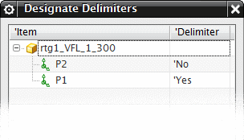
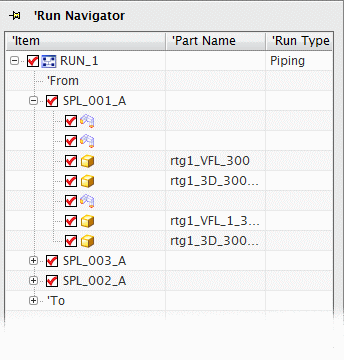

管道通路中的管段
管段是管道通路的再分，可以作为一个制造单元。一旦管段制造完成，就可以在制造现场装配成为一个管道通路。下图所示为您将在管道通路中定义的三个不同的管段。

指定分隔符
分隔符将定义一个管段的结束以及另一个管段的开始。当您把管道通路中的组件指定为分隔对象，您就必须选择它的哪一个端口将作为实际分隔符。

指派分隔符
要在选定组件上指定分隔符端口，在指定分隔符对话框中，右击端口行并选择指派分隔符，该端口的分隔符状态将由否变为是。
取消指派分隔符
右击某个端口并选择取消指派分隔符，将把该端口的分隔符状态将由是变为否。
检测管段
一旦在管道通路中定义了所需数量的分隔符，检测管段命令就将使用分隔符来把管道通路细分为管段，创建管段的同时根据生成管段 ID对话框中的设置来对管段进行命名。导航器随后将把所有的管道通路组件组织到所属的管段节点下方。

位于何处？
|
应用模块 |
机械管线布置 |
|
管道通路导航器 |
右击管道通路节点→指定分隔符 & 检测管段 |
|
菜单 |
工具→管道通路导航器→指定分隔符 & 检测管段 |